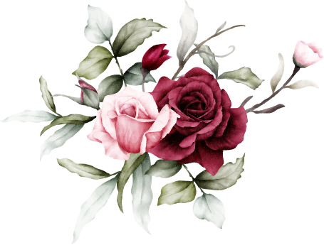

19.09.2026
The Holy Matrimony of

“Do everything in love”
1 Corinthians 16:14
It all started with a prayer, trusting that God would bring the right person into my life in His perfect timing. In faith, I even told my cousin that I would bring a boyfriend to her wedding—even though I was completely single at the time!
Then, through a series of unexpected events, our paths crossed. At first, I was simply hoping to make more friends who were in the same stage of life. What I didn't expect was to find someone who would become so special to me. We quickly became close, and what started as friendship soon grew into something much more.
I never imagined I would have the confidence to enter a relationship after knowing someone for only six months. Yet with him, everything felt natural, peaceful, and right. Looking back, I can see that God was answering my prayer all along—just in a way I never expected. What began with faith became friendship, friendship became love, and now we begin our next chapter together.
In 2018, Michael moved to Canada with a clear purpose—to pursue higher education, build a better future, and eventually become a Permanent Resident. At the time, finding a relationship was never part of his plan. His heart was focused on adapting to a new country and chasing the goals God had placed before him.
Then came the COVID-19 pandemic. At a time when the world felt isolated and meeting new people seemed almost impossible, God quietly began writing a different story.
Through his housemate, Monica, Michael was introduced to Jessica. What started as simple conversations slowly grew into a genuine friendship, and before they realized it, that friendship had become something much deeper. After much prayer and trusting God’s timing, Michael asked Jessica to start dating and they relationship journey began.
Five years in relationship has been a journey of ups and downs. With deeper feelings for each other and more deeper discussions, misunderstanding and miscommunication become inevitable. Expectations for a change became necessity and learned that love is about choosing and accepting him for who he is. This journey taught her to lead with love and give her best, instead of always expecting fairness in everything.
Michael Widjaya
Jessica Ekasalim
Michael Widjaya
Sehan Ekasalim & Flora Susanto
Ps Ferdy Chayadi